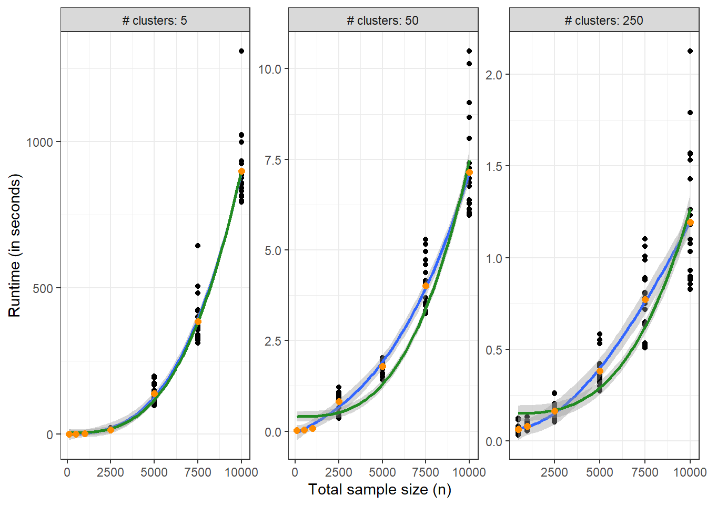
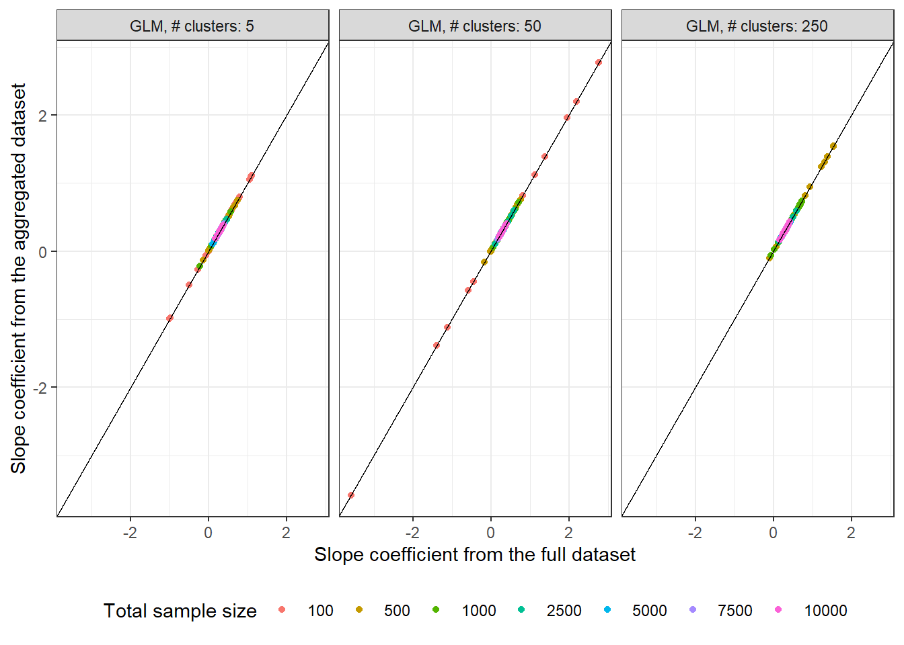

TL;DR: The geepack R package doesn’t do what it doesn’t claim to do
Introduction
Running many generalized estimating equation (GEE) models can be quite time consuming when at least one of the clusters has a lot of subjects, as the time complexity of the GEE model is \(O(n^3)\)1 due to the full matrix multiplication required for computing the correlation matrix.
1 More like \(O(m^3)\) where \(m\) is the size of largest cluster when the clusters vary in terms of size.
For relatively simple models – where there are a few categorical predictors, the continuous variables are coarsened, and the response variable is binary – there is a computational trick that can be employed while fitting logistic regression models where the raw data are aggregated and fed into the model. An example of this approach can be found here.
Does this approach work – in terms of providing the same point estimates and standard errors – for GEE models as well? Based on an example dataset as well as a small simulation study, the answer seems to be ‘it depends’.
Real dataset
The first comparison is based on the ohio dataset from the {geepack} R package. This kind of setting where there are very many small clusters (537 clusters with 4 observations per cluster) is where GEEs usually shine.
So the estimated scale, correlation, and the maximum cluster size statistics are wrong in the second case, but the parameter estimates for the intercept and slope coefficients as well as the corresponding standard errors are nearly identical, which can be compared more easily in this data frame that combines the estimates from both models
# A tibble: 4 × 6
term estimate std.error statistic p.value data
<chr> <dbl> <dbl> <dbl> <dbl> <chr>
1 (Intercept) -1.82 0.110 275. 0 raw data
2 (Intercept) -1.82 0.110 275. 0 aggregated data
3 smoke 0.272 0.178 2.34 0.126 raw data
4 smoke 0.272 0.178 2.34 0.126 aggregated data
But does this also work in settings where there are a small number of large clusters, which is where the GEE calculations take a long time to run?
Simulations
Model
The code below simulates data from the following mixed-effects model2 with random-intercept terms where person \(j\) is nested within cluster \(i\). Each cluster has a different proportion of treatment uptake \(p_{treated,j}\) varying between 40-60% where \(X_{ij}\) indicates whether person \(j\) in cluster \(i\) received the treatment or not.
2 The model syntax is inspired by the statistical rethinking book
The time taken to train the model on the raw as well as the aggregate data, the point estimates, and standard errors for the coefficients are stored for analysis.
Code
simulate_data_and_get_estimates <-function(n, n_clus, seed) {set.seed(seed)# cluster random intercept rand_intercept <-rnorm(n_clus, mean =0, sd =1)set.seed(seed) sim_data <-map_dfr(.x =1:n_clus, .f =~ {tibble(id = .x,x =rbinom(round(n / n_clus), size =1, prob =runif(1, 0.4, 0.6)),y =rbinom(round(n / n_clus), size =1, prob =plogis(-1.4+0.3* x + rand_intercept[[.x]])) ) })# fit model to raw data t0 <-Sys.time() mod1_sim <-geeglm( y ~ x,data = sim_data,family ="binomial", id = id, corstr ="exchangeable" ) t1 <-Sys.time() t1 <-as.numeric(difftime(t1, t0, units ="secs"))# fit GLM model to raw data mod1_sim_glm <-glm(y ~factor(id) + x -1,data = sim_data, family ="binomial")# fit model to aggregated data agg_data <- sim_data %>%group_by(id, x) %>%summarize(n =n(), y =sum(y), .groups ="drop") %>%mutate(y_prob = y / n) t2 <-Sys.time() mod2_sim <-geeglm( y_prob ~ x,data = agg_data, weights = n,family ="binomial", id = id, corstr ="exchangeable" ) t3 <-Sys.time() t3 <-as.numeric(difftime(t3, t2, units ="secs"))# fit GLM model to aggregated data mod2_sim_glm <-glm(y_prob ~factor(id) + x -1, data = agg_data,weights = n, family ="binomial") results <-bind_rows(# GEE results broom::tidy(mod1_sim) %>%mutate(data ='raw data', time_secs = t1, estimator ="GEE"), broom::tidy(mod2_sim) %>%mutate(data ='aggregated data', time_secs = t3, estimator ="GEE"),# GLM results broom::tidy(mod1_sim_glm) %>%mutate(data ='raw data', time_secs =NA_real_, estimator ="GLM"), broom::tidy(mod2_sim_glm) %>%mutate(data ='aggregated data', time_secs =NA_real_, estimator ="GLM") ) %>%mutate(n = n, n_clus = n_clus, seed = seed) %>%filter(!stringr::str_detect(term, pattern ="id"))return(results)}
Here’s what the output from this function looks like:
# A tibble: 6 × 11
term estim…¹ std.e…² stati…³ p.value data time_s…⁴ estim…⁵ n n_clus
<chr> <dbl> <dbl> <dbl> <dbl> <chr> <dbl> <chr> <dbl> <dbl>
1 (Intercep… -1.59 0.409 15.0 1.07e-4 raw … 0.00748 GEE 100 5
2 x -0.144 0.383 0.141 7.07e-1 raw … 0.00748 GEE 100 5
3 (Intercep… -1.73 0.395 19.1 1.27e-5 aggr… 0.00326 GEE 100 5
4 x -0.107 0.402 0.0702 7.91e-1 aggr… 0.00326 GEE 100 5
5 x -0.266 0.596 -0.446 6.55e-1 raw … NA GLM 100 5
6 x -0.266 0.596 -0.446 6.55e-1 aggr… NA GLM 100 5
# … with 1 more variable: seed <dbl>, and abbreviated variable names ¹estimate,
# ²std.error, ³statistic, ⁴time_secs, ⁵estimator
simulation_parameters <-expand_grid(n =c(100, 500, 1000, 2500, 5000, 7500, 10000),n_clus =c(5, 50, 250),seed =1:20) %>%# remove runs where number of clusters is larger than total sample sizefilter(n_clus < n)# set up multicore processingplan(multisession, workers =15)# parallelize purrr::pmap_dfr by using the {furrr} packagesimulation_results <-future_pmap_dfr(.l = simulation_parameters,# have to pass args as ..1 or ..2, else it fails.f =~simulate_data_and_get_estimates(n = ..1, n_clus = ..2, seed = ..3),.options =furrr_options(seed =NULL))plan(sequential) # turn off multicore
This chunk can take a while to run for some of the parameter combinations, so pre-computed results are loaded and analyzed further.
simulation_results <-read_csv(file ="gee_glm_sim.csv", show_col_types =FALSE) %>%mutate(n_clus_raw = n_clus,n_clus =factor(paste0("# clusters: ", n_clus),levels =paste0("# clusters: ", c(5, 50, 250))),term =case_when( term =="(Intercept)"~"Intercept", term =="x"~"Slope", TRUE~ term ))glimpse(simulation_results)
First, the time taken to fit the model to the raw dataset is shown as a function of total sample size \(n\) where there are \(n / n_{clus}\) observations per cluster. Each panel has a different y-axis to allow reading values directly from the plot.
simulation_results %>%filter(data =="raw data", estimator =="GEE") %>%# distinct here since the data frame contains a row for# each of the intercept and slope terms but the runtimes are the same# for both these termsdistinct(seed, time_secs, n, n_clus) %>%ggplot(aes(x = n, y = time_secs, group = n_clus)) +geom_point() +geom_smooth(method ="lm", formula = y ~poly(x, degree =3)) +geom_smooth(method ="lm", formula = y ~I(x ^3), color ="forestgreen") +stat_summary(aes(group =interaction(n_clus, n)), geom ="point", fun = mean, color ="darkorange", size =2) +xlab("Total sample size (n)") +ylab("Runtime (in seconds)") +facet_wrap(~ n_clus, scales ="free")

The blue line fits a cubic polynomial \[time = \beta_0 + \beta_1 n + \beta_2 n^2 + \beta_3 n^3 + \varepsilon\] to the run times as a function of sample size. The green line fits the same model but without the linear and quadratic terms, i.e, \(time = \alpha_0 + \alpha_1 n^3 + \varepsilon\). The yellow points are the mean run times for each level of \(n\) within each panel.
When the number of clusters is very small, an increase in the sample size within the largest cluster leads to a cubic increase in expected run times. The closeness of the blue and green lines in the leftmost panel indicates that the cubic term in the execution time model dominates the lower order terms. In the second and third panels, the \(O(n^3)\) limit hasn’t hit yet, as the green and the blue lines are in disagreement.
For 10000 samples split into 2000 samples in each of the five clusters, it takes approximately 15 minutes per run. The same total sample size split into 250 samples in each of the 40 clusters, each model takes about 7 seconds to run, and even less time when there are 250 clusters. This is a massive difference in time between the different settings.
Convergence issues
However, unfortunately some of the models run into convergence issues, where the point estimates and the standard errors explode
This seems to be a problem when training GEE models on aggregated data when the number of clusters is low irrespective of the total sample size, which leads to about 21% of the estimates from the aggregated data being convergence failures. An estimate is flagged as convergence failure when the stdandard error of the coefficients > 5 on the logit scale.
simulation_results <- simulation_results %>%mutate(high_se =as.numeric(std.error >5)) simulation_results %>%filter(estimator =="GEE") %>%select(-estimate, -std.error, -statistic, -p.value, -time_secs) %>%# put intercept and slope estimates in one rowpivot_wider(everything(), names_from = term, values_from = high_se) %>%# if at least one of the intercept or slope terms have a very high semutate(high_se =pmin(Intercept + Slope, 1)) %>%group_by(data, n_clus, n) %>%summarize(n_total =n(), n_failed =sum(high_se), .groups ="drop_last") %>%#print(n = Inf) %>%summarize(n_total =sum(n_total), n_failed =sum(n_failed), .groups ="drop") %>%mutate(percent_failed =100* n_failed / n_total)
# A tibble: 6 × 5
data n_clus n_total n_failed percent_failed
<chr> <fct> <int> <dbl> <dbl>
1 aggregated data # clusters: 5 140 29 20.7
2 aggregated data # clusters: 50 140 0 0
3 aggregated data # clusters: 250 120 0 0
4 raw data # clusters: 5 140 0 0
5 raw data # clusters: 50 140 0 0
6 raw data # clusters: 250 120 0 0
Raw vs aggregated data estimates
These rows with convergence failures can be removed and the agreement between the estimates from the raw vs the aggregate datasets can be assessed visually
slope_plot_data <- simulation_results %>%filter(term =="Slope", high_se ==0) %>%select(seed, term, data, estimate, n_clus, n, estimator) %>% tidyr::pivot_wider(id_cols =c(seed, term, n_clus, n, estimator),names_from = data, values_from = estimate) %>%mutate(`Total sample size`=factor(n), id =interaction(estimator, n_clus, sep =", ", lex.order =TRUE)) slope_plot_data %>%filter(estimator =="GEE") %>%ggplot(aes(x =`raw data`, y =`aggregated data`, color =`Total sample size`)) +geom_point() +geom_abline(intercept =0, slope =1) +# geom_point(data = tibble(x = 0.3, y = 0.3), # aes(x = x, y = y), # color = "black", size = 3, inherit.aes = FALSE) +xlab("Slope coefficient from the full dataset") +ylab("Slope coefficient from the aggregated dataset") +theme(legend.position ="bottom") +guides(color =guide_legend(nrow =1)) +facet_wrap(~ id, ncol =3, scales ="fixed")
This plot compares the estimated slope coefficient (true value 0.3) from the GEE model on aggregated data vs the estimated slope coefficient from the model on the raw data while varying the number of clusters as well as the total sample size. The agreement between estimates increases as the number of clusters increases (going from the top left panel to the top right panel).
On the other hand, the estimates from running GLMs on the same aggregated and raw datasets are identical, as indicated by the points lying precisely on the black line in the following plot
slope_plot_data %>%filter(estimator =="GLM") %>%ggplot(aes(x =`raw data`, y =`aggregated data`, color =`Total sample size`)) +geom_point() +geom_abline(intercept =0, slope =1) +# geom_point(data = tibble(x = 0.3, y = 0.3), # aes(x = x, y = y), # color = "black", size = 3, inherit.aes = FALSE) +xlab("Slope coefficient from the full dataset") +ylab("Slope coefficient from the aggregated dataset") +theme(legend.position ="bottom") +guides(color =guide_legend(nrow =1)) +facet_wrap(~ id, ncol =3, scales ="fixed")

As expected, the estimates for \(n = 10,000\) are tightly clustered around the true value compared to \(n = 100\) in both sets of plots.
Ok so the estimates aren’t identical for the GEE models unfortunately, but are they approximately similar across the raw and aggregated datasets? This is assessed visually via box plots below for the case of 5 clusters in the data
dist_plot_data <- simulation_results %>%mutate(ci_lower = estimate - (qnorm(0.975) * std.error),ci_upper = estimate + (qnorm(0.975) * std.error), ci_width = ci_upper - ci_lower, ci_upper_half_width = ci_upper - estimate ) %>%filter(term =="Slope", high_se ==0, estimator =="GEE") %>%select(Estimate = estimate, `Std. Error`= std.error, `95% CI LL`= ci_lower, `95% CI UL`= ci_upper,`95% CI Width`= ci_width,`95% CI Upper HW`= ci_upper_half_width, n, n_clus_raw, n_clus, data, seed) %>% tidyr::pivot_longer(cols = Estimate:`95% CI Upper HW`, names_to ="statistic", values_to ="values") %>%mutate(statistic =factor(statistic,levels =c("Estimate", "Std. Error", "95% CI LL", "95% CI UL", "95% CI Width", "95% CI Upper HW")), n =factor(n, ordered =TRUE), data = stringr::str_to_title(data) )glimpse(dist_plot_data)
So based on these box plots, it seems like most of the sampling distributions for these statistics – point estimate, standard errors, CI width, etc. – are pretty comparable but not identical.
Conclusion
So to conclude, this strategy isn’t really going to be useful when fitting a single GEE model to a real dataset using the R package {geepack}, but it can still be pretty decent when fitting many GEE models to simulated datasets to calculate some statistics. Additionally, all (?) matrix operations performed by GEE eventually boil down to summing some random variables, so it should be possible to have an implementation that works on aggregated data.
Source Code
---title: "GEE on aggregated data?"date: "2023-03-20"categories: [R, GLM, GEE]code-fold: falsereference-location: marginimage: cubic_runtime.png---TL;DR: The geepack R package doesn't do what it doesn't claim to do# IntroductionRunning many _generalized estimating equation_ (GEE) models can be quite time consuming when at least one of the clusters has a lot of subjects, as the [time complexity](https://en.wikipedia.org/wiki/Big_O_notation) of the GEE model is $O(n^3)$[^max_cluster_size] due to the full [matrix multiplication](https://en.wikipedia.org/wiki/Computational_complexity_of_matrix_multiplication) required for computing the correlation matrix.[^max_cluster_size]: More like $O(m^3)$ where $m$ is the size of largest cluster when the clusters vary in terms of size.For relatively simple models -- where there are a few categorical predictors, the continuous variables are coarsened, and the response variable is binary -- there is a computational trick that can be employed while fitting logistic regression models where the raw data are aggregated and fed into the model. An example of this approach can be found [here](https://predictivehacks.com/how-to-run-logistic-regression-on-aggregate-data-in-r/).Does this approach work -- in terms of providing the same point estimates and standard errors -- for GEE models as well? Based on an example dataset as well as a small simulation study, the answer seems to be 'it depends'.# Real datasetThe first comparison is based on the `ohio` dataset from the `{geepack}` R package. This kind of setting where there are very many small clusters (537 clusters with 4 observations per cluster) is where GEEs usually shine.```{r}library(tidyverse)library(furrr)library(geepack)theme_set(theme_bw())data("ohio")ohio <-as_tibble(ohio)glimpse(ohio)```Fitting a model to the full dataset results in the following output```{r}mod1 <-geeglm(formula = resp ~ smoke, data = ohio, family ="binomial",id = id, corstr ="exchangeable")summary(mod1)```Fitting the same model to an aggregated version of the same dataset results in identical estimates```{r}agg_df <- ohio %>%group_by(id, smoke) %>%summarize(n =n(),resp =sum(resp),.groups ="drop" ) %>%mutate(resp_p = resp / n)mod2 <-geeglm(formula = resp_p ~ smoke,weights = n, data = agg_df,family ="binomial", id = id, corstr ="exchangeable")summary(mod2)```So the estimated scale, correlation, and the maximum cluster size statistics are wrong in the second case, but the parameter estimates for the intercept and slope coefficients as well as the corresponding standard errors are nearly identical, which can be compared more easily in this data frame that combines the estimates from both models```{r}bind_rows( broom::tidy(mod1) %>%mutate(data ="raw data"), broom::tidy(mod2) %>%mutate(data ="aggregated data")) %>%arrange(term)```But does this also work in settings where there are a small number of large clusters, which is where the GEE calculations take a long time to run?# Simulations## ModelThe code below simulates data from the following mixed-effects model[^rethinking] with random-intercept terms where person $j$ is nested within cluster $i$. Each cluster has a different proportion of treatment uptake $p_{treated,j}$ varying between 40-60% where $X_{ij}$ indicates whether person $j$ in cluster $i$ received the treatment or not.[^rethinking]: The model syntax is inspired by the statistical rethinking book$$\begin{gather}Y_{ij} \sim \text{Bernoulli}(p_{ij}) \\\text{logit}(p_{ij}) = -1.4 + 0.3 \times X_{ij} + \alpha_i \\\alpha_i \sim \text{Normal}(0, 1) \\X_{ij} \sim \text{Bernoulli}(p_{treated,i}) \\p_{treated,i} \sim \text{Uniform(0.4, 0.6)}\end{gather}$$The time taken to train the model on the raw as well as the aggregate data, the point estimates, and standard errors for the coefficients are stored for analysis.## Code```{r}simulate_data_and_get_estimates <-function(n, n_clus, seed) {set.seed(seed)# cluster random intercept rand_intercept <-rnorm(n_clus, mean =0, sd =1)set.seed(seed) sim_data <-map_dfr(.x =1:n_clus, .f =~ {tibble(id = .x,x =rbinom(round(n / n_clus), size =1, prob =runif(1, 0.4, 0.6)),y =rbinom(round(n / n_clus), size =1, prob =plogis(-1.4+0.3* x + rand_intercept[[.x]])) ) })# fit model to raw data t0 <-Sys.time() mod1_sim <-geeglm( y ~ x,data = sim_data,family ="binomial", id = id, corstr ="exchangeable" ) t1 <-Sys.time() t1 <-as.numeric(difftime(t1, t0, units ="secs"))# fit GLM model to raw data mod1_sim_glm <-glm(y ~factor(id) + x -1,data = sim_data, family ="binomial")# fit model to aggregated data agg_data <- sim_data %>%group_by(id, x) %>%summarize(n =n(), y =sum(y), .groups ="drop") %>%mutate(y_prob = y / n) t2 <-Sys.time() mod2_sim <-geeglm( y_prob ~ x,data = agg_data, weights = n,family ="binomial", id = id, corstr ="exchangeable" ) t3 <-Sys.time() t3 <-as.numeric(difftime(t3, t2, units ="secs"))# fit GLM model to aggregated data mod2_sim_glm <-glm(y_prob ~factor(id) + x -1, data = agg_data,weights = n, family ="binomial") results <-bind_rows(# GEE results broom::tidy(mod1_sim) %>%mutate(data ='raw data', time_secs = t1, estimator ="GEE"), broom::tidy(mod2_sim) %>%mutate(data ='aggregated data', time_secs = t3, estimator ="GEE"),# GLM results broom::tidy(mod1_sim_glm) %>%mutate(data ='raw data', time_secs =NA_real_, estimator ="GLM"), broom::tidy(mod2_sim_glm) %>%mutate(data ='aggregated data', time_secs =NA_real_, estimator ="GLM") ) %>%mutate(n = n, n_clus = n_clus, seed = seed) %>%filter(!stringr::str_detect(term, pattern ="id"))return(results)}```Here's what the output from this function looks like:```{r}simulate_data_and_get_estimates(n =100, n_clus =5, seed =3)``````{r}#| echo: true#| eval: falsesimulation_parameters <-expand_grid(n =c(100, 500, 1000, 2500, 5000, 7500, 10000),n_clus =c(5, 50, 250),seed =1:20) %>%# remove runs where number of clusters is larger than total sample sizefilter(n_clus < n)# set up multicore processingplan(multisession, workers =15)# parallelize purrr::pmap_dfr by using the {furrr} packagesimulation_results <-future_pmap_dfr(.l = simulation_parameters,# have to pass args as ..1 or ..2, else it fails.f =~simulate_data_and_get_estimates(n = ..1, n_clus = ..2, seed = ..3),.options =furrr_options(seed =NULL))plan(sequential) # turn off multicore```This chunk can take a while to run for some of the parameter combinations, so pre-computed results are loaded and analyzed further.```{r}simulation_results <-read_csv(file ="gee_glm_sim.csv", show_col_types =FALSE) %>%mutate(n_clus_raw = n_clus,n_clus =factor(paste0("# clusters: ", n_clus),levels =paste0("# clusters: ", c(5, 50, 250))),term =case_when( term =="(Intercept)"~"Intercept", term =="x"~"Slope", TRUE~ term ))glimpse(simulation_results)```# Analysis## Computation timeFirst, the time taken to fit the model to the raw dataset is shown as a function of total sample size $n$ where there are $n / n_{clus}$ observations per cluster. Each panel has a different y-axis to allow reading values directly from the plot.```{r}simulation_results %>%filter(data =="raw data", estimator =="GEE") %>%# distinct here since the data frame contains a row for# each of the intercept and slope terms but the runtimes are the same# for both these termsdistinct(seed, time_secs, n, n_clus) %>%ggplot(aes(x = n, y = time_secs, group = n_clus)) +geom_point() +geom_smooth(method ="lm", formula = y ~poly(x, degree =3)) +geom_smooth(method ="lm", formula = y ~I(x ^3), color ="forestgreen") +stat_summary(aes(group =interaction(n_clus, n)), geom ="point", fun = mean, color ="darkorange", size =2) +xlab("Total sample size (n)") +ylab("Runtime (in seconds)") +facet_wrap(~ n_clus, scales ="free")```The blue line fits a cubic polynomial $$time = \beta_0 + \beta_1 n + \beta_2 n^2 + \beta_3 n^3 + \varepsilon$$ to the run times as a function of sample size. The green line fits the same model but without the linear and quadratic terms, i.e, $time = \alpha_0 + \alpha_1 n^3 + \varepsilon$. The yellow points are the mean run times for each level of $n$ within each panel. When the number of clusters is very small, an increase in the sample size within the largest cluster leads to a cubic increase in expected run times. The closeness of the blue and green lines in the leftmost panel indicates that the cubic term in the execution time model dominates the lower order terms. In the second and third panels, the $O(n^3)$ limit hasn't hit yet, as the green and the blue lines are in disagreement. For 10000 samples split into 2000 samples in each of the five clusters, it takes approximately **15 minutes** per run. The same total sample size split into 250 samples in each of the 40 clusters, each model takes about **7 seconds** to run, and even less time when there are 250 clusters. This is a massive difference in time between the different settings.## Convergence issuesHowever, unfortunately some of the models run into convergence issues, where the point estimates and the standard errors explode```{r}simulation_results %>%filter(estimator =="GEE") %>%arrange(desc(std.error)) %>%head(n =10)```This seems to be a problem when training GEE models on aggregated data when the number of clusters is low irrespective of the total sample size, which leads to about 21% of the estimates from the aggregated data being convergence failures. An estimate is flagged as convergence failure when the stdandard error of the coefficients > 5 on the logit scale.```{r}simulation_results <- simulation_results %>%mutate(high_se =as.numeric(std.error >5)) simulation_results %>%filter(estimator =="GEE") %>%select(-estimate, -std.error, -statistic, -p.value, -time_secs) %>%# put intercept and slope estimates in one rowpivot_wider(everything(), names_from = term, values_from = high_se) %>%# if at least one of the intercept or slope terms have a very high semutate(high_se =pmin(Intercept + Slope, 1)) %>%group_by(data, n_clus, n) %>%summarize(n_total =n(), n_failed =sum(high_se), .groups ="drop_last") %>%#print(n = Inf) %>%summarize(n_total =sum(n_total), n_failed =sum(n_failed), .groups ="drop") %>%mutate(percent_failed =100* n_failed / n_total)```## Raw vs aggregated data estimatesThese rows with convergence failures can be removed and the agreement between the estimates from the raw vs the aggregate datasets can be assessed visually```{r}slope_plot_data <- simulation_results %>%filter(term =="Slope", high_se ==0) %>%select(seed, term, data, estimate, n_clus, n, estimator) %>% tidyr::pivot_wider(id_cols =c(seed, term, n_clus, n, estimator),names_from = data, values_from = estimate) %>%mutate(`Total sample size`=factor(n), id =interaction(estimator, n_clus, sep =", ", lex.order =TRUE)) slope_plot_data %>%filter(estimator =="GEE") %>%ggplot(aes(x =`raw data`, y =`aggregated data`, color =`Total sample size`)) +geom_point() +geom_abline(intercept =0, slope =1) +# geom_point(data = tibble(x = 0.3, y = 0.3), # aes(x = x, y = y), # color = "black", size = 3, inherit.aes = FALSE) +xlab("Slope coefficient from the full dataset") +ylab("Slope coefficient from the aggregated dataset") +theme(legend.position ="bottom") +guides(color =guide_legend(nrow =1)) +facet_wrap(~ id, ncol =3, scales ="fixed")```This plot compares the estimated slope coefficient (true value 0.3) from the GEE model on aggregated data vs the estimated slope coefficient from the model on the raw data while varying the number of clusters as well as the total sample size. The agreement between estimates increases as the number of clusters increases (going from the top left panel to the top right panel). On the other hand, the estimates from running GLMs on the same aggregated and raw datasets are identical, as indicated by the points lying precisely on the black line in the following plot```{r}slope_plot_data %>%filter(estimator =="GLM") %>%ggplot(aes(x =`raw data`, y =`aggregated data`, color =`Total sample size`)) +geom_point() +geom_abline(intercept =0, slope =1) +# geom_point(data = tibble(x = 0.3, y = 0.3), # aes(x = x, y = y), # color = "black", size = 3, inherit.aes = FALSE) +xlab("Slope coefficient from the full dataset") +ylab("Slope coefficient from the aggregated dataset") +theme(legend.position ="bottom") +guides(color =guide_legend(nrow =1)) +facet_wrap(~ id, ncol =3, scales ="fixed")```As expected, the estimates for $n = 10,000$ are tightly clustered around the true value compared to $n = 100$ in both sets of plots.Ok so the estimates aren't identical for the GEE models unfortunately, but are they approximately similar across the raw and aggregated datasets? This is assessed visually via box plots below for the case of 5 clusters in the data```{r}dist_plot_data <- simulation_results %>%mutate(ci_lower = estimate - (qnorm(0.975) * std.error),ci_upper = estimate + (qnorm(0.975) * std.error), ci_width = ci_upper - ci_lower, ci_upper_half_width = ci_upper - estimate ) %>%filter(term =="Slope", high_se ==0, estimator =="GEE") %>%select(Estimate = estimate, `Std. Error`= std.error, `95% CI LL`= ci_lower, `95% CI UL`= ci_upper,`95% CI Width`= ci_width,`95% CI Upper HW`= ci_upper_half_width, n, n_clus_raw, n_clus, data, seed) %>% tidyr::pivot_longer(cols = Estimate:`95% CI Upper HW`, names_to ="statistic", values_to ="values") %>%mutate(statistic =factor(statistic,levels =c("Estimate", "Std. Error", "95% CI LL", "95% CI UL", "95% CI Width", "95% CI Upper HW")), n =factor(n, ordered =TRUE), data = stringr::str_to_title(data) )glimpse(dist_plot_data)``````{r}#| fig-height: 9#| fig-width: 7.5#| fig-dpi: 300dist_plot_data %>%filter(n_clus_raw ==5) %>%ggplot(aes(x = n, y = values, color = data)) +#geom_point(position = position_dodge(width = 0.2)) +geom_boxplot(position =position_dodge(width =1)) +xlab("Total sample size (n)") +ylab("") +theme(legend.position ="bottom", legend.title =element_blank()) +facet_wrap(~ statistic, ncol =2, scales ="free")```So based on these box plots, it seems like most of the sampling distributions for these statistics -- point estimate, standard errors, CI width, etc. -- are pretty comparable but not identical.# ConclusionSo to conclude, this strategy isn't really going to be useful when fitting a single GEE model to a real dataset using the R package `{geepack}`, but it can still be pretty decent when fitting many GEE models to simulated datasets to calculate some statistics. Additionally, all (?) matrix operations performed by GEE eventually boil down to summing some random variables, so it should be possible to have an implementation that works on aggregated data.